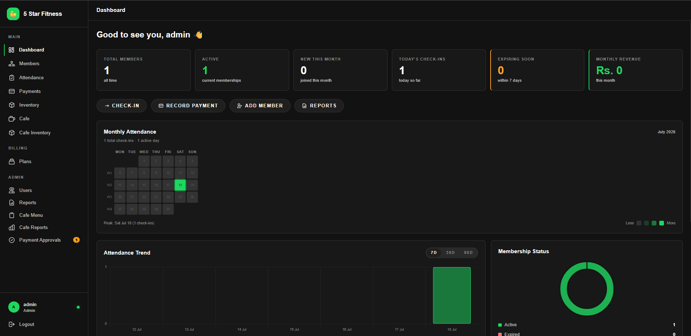
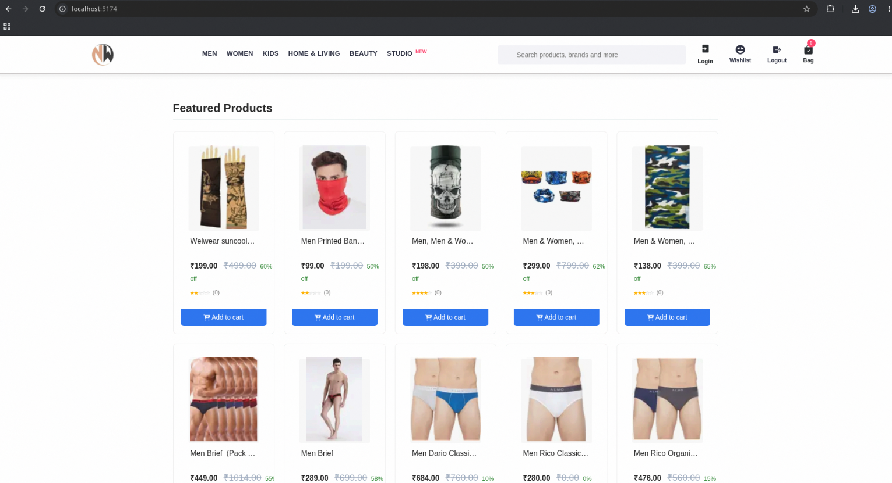
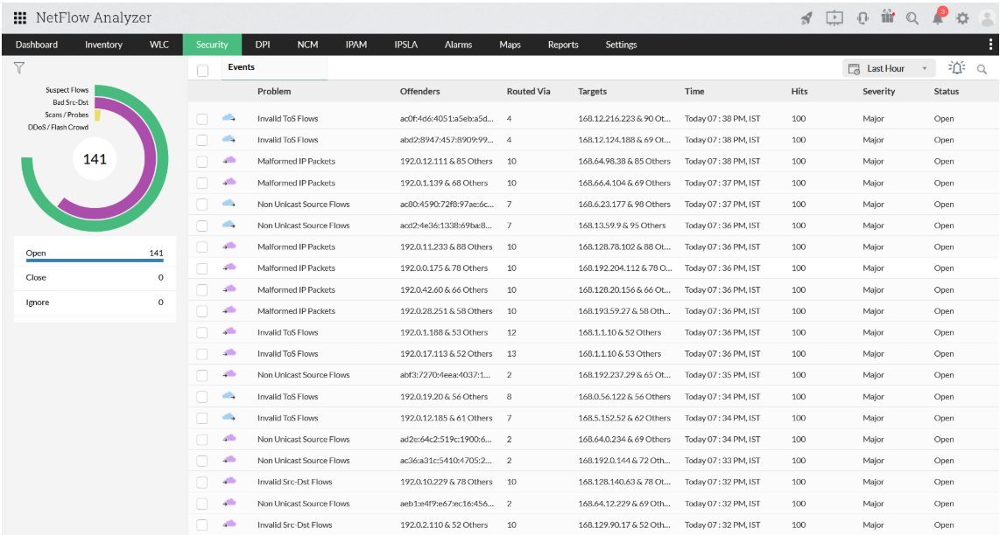

Selected Work

Smart Gym + Cafe System
A local gym was tracking attendance manually on paper. I replaced it with a full management platform — facial recognition check-in, billing, inventory, and admin dashboards.
Deployed for a paying client — handles 100+ daily facial check-ins using InsightFace

E-Commerce Recommendation Engine
Built a content-based filtering engine from scratch using NLP and cosine similarity — trained on 10,000 product descriptions with no ML framework abstraction, pure algorithmic implementation.
Trained and tested on 10,000 product descriptions from Kaggle

Network Anomaly Detection
Trained an unsupervised autoencoder to detect anomalous network traffic without labeled data — achieving 97–99% detection accuracy on the NSL-KDD dataset.
Achieved 97–99% detection accuracy on network traffic data